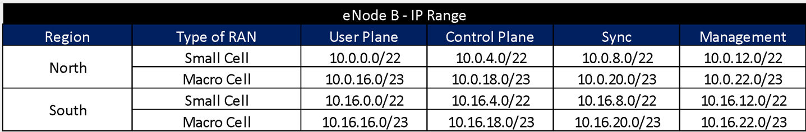

This section
presents a generic yet customizable end-to-end process flow to perform the
transport design for the transport network.
The generic
end-to-end (E2E) process flow displayed in Figure 14 orchestrates general tasks to
perform the Transport Network LLD in a logical and well-structured sequence.
Figure 14. Generic E2E Process Flow.
Details and
customization options of each step are reviewed in the following sections. In
addition, a Tx
LLD Process Flow Designer is provided as
part of the Methods of Engagement.
This section
presents an examination of each of the steps involved in the Low-level Tx
Design process to identify, isolate and describe the range of implementation
options on the path towards customization based on NaaS operator requirements
and constraints.
In order to
demonstrate a practical exercise to implement the process design flow, a Design
Example is followed along each of the process steps.
Design Example
In this particular example, the process to
generate the LLD Design for the scenario in Figure 15 is presented. It must be noted
that this is the continuation of the Example presented in the Tx HLD Design.
Figure 15.
Design Example Scenario.
The scenario is composed of eight RAN sites that
will be analyzed to perform the Transport LLD Design. The example considers two
geographical regions (North and South), where all the RAN sites presented are
located in the North Region.
The distribution of transport technologies is the
following: Four nodes use Fiber Optic, three nodes use Microwave and one site
uses Satellite Link. The details on the transport technologies selection can be
found in the Tx HLD Module.
The General IP Distribution Plan is presented in Table 6. The General IP Distribution Plan is
presented in Table 6, and it
describes the general segments defined by each of the different network
elements. The details on the General IP Distribution Plan generation can be
found in the Tx & IP Architecture Module.
Table 6.
General IP Plan Distribution for the Example Scenario.
The VLAN Definition to be used to separate the
traffic for different planes is presented in the Table 7. The details on the VLAN Definition
can be found in the Tx & IP Architecture Module.
Table 7.
VLAN Definition in Design Example.
Whereas this Design Example only focuses on the
eight RAN sites presented in Figure 15, the total number of expected RAN
sites and Tx links to be deployed are presented in Table 8. These numbers already consider the
future growth of the network.
Table 8.
Total number of elements for the Example Scenario
Even if the number of required IP addresses for
the number of elements does not cover in totality the corresponding IP segment,
the methodology presented in Section 3.3 must be performed to enhance the
network management and support future expansions.
NaaS operators
must perform the selection of the Tx Equipment from multiple vendor
alternatives. The complete process to select the Tx Equipment is included
within the Procurement Module (RFx Process Module). This section focuses on the
technical aspects to perform the evaluation of transport equipment from
different vendors.
From the technical perspective, Table 9 displays the typical requirements
that the transport equipment must satisfy which must be defined according to
the required network segment (e.g., last-mile or aggregation link
implementation scenario).
|
|
Evaluated
Characteristics
|
|
Supported
Protocols
|
Support
for the protocols defined in Tx & IP Architecture Module
|
|
Availability
|
Reliability
and uptime
|
|
Time-to-Repair
|
|
Time-to-Deploy
|
|
Performance
|
Throughput
performance under normal and stressing conditions
|
|
Maximum
number of active connections
|
|
Dimensions
|
Standard
dimensions compliance
|
|
Power
Requirements
|
Type
of energy required (AD/DC) and power consumption profile
|
|
Security
|
Implemented
security mechanisms
|
|
Cost
|
Cost
of the equipment.
|
Table 9. Typical specifications to be evaluated in
transport equipment.
The decision to
select the Tx Equipment is also affected by the financial constraints of the
project. The final selection of the Tx Equipment is performed during the RFx
process and in conjunction with the Procurement Team.
Design Example
In the Design Example, there are two Tx equipment
provided by different vendors (Vendor A and Vendor B) that are evaluated for
selection. The characteristics of the Tx equipment are shown in Table 10.
Table 10. Tx Equipment
Specification for Design Example.
From Table 10, it can be seen that both options
comply with the required protocol stack and security features; they also have a
similar value of the availability figure and both require a standardized unit
rack for installation. Vendor A offers more system throughput, but it also has
more power requirements and the price is considerably higher.
Therefore, Vendor B is the selected option in the
Design Example since it complies with the required protocol stack, security
features, system throughput (it fully complies with the architecture
requirement). Furthermore, the power requirements are low (a critical aspect in
rural environments) and the price is the most accessible.
The aim of Model
Site Catalogue Definition is to standardize and document the possible Tx Site
equipment configurations to be implemented. By doing this, the design options
are constrained which simplifies the overall process.
In order to
create the catalogue, the granularity to be used must be defined. Granularity
is the level of detail present in the scenarios included in the catalogue and
will dictate the different variations to be included in the catalogue. The
possible alternatives to be used to establish the granularity are:
- Transport Technologies:
Fiber Optic, Microwave, Satellite.
-
RAN Equipment: Macro Cell,
Small Cell.
-
Tx Equipment Vendor.
-
Transport Vendor.
NaaS operator
should select the appropriate level of granularity that better suits its
requirements. However, it is highly recommended that a high level of
granularity is chosen in order to minimize the number of possible alternatives
and simplify the design process.
Based on
selected granularity, an identification of all possible scenarios is performed.
Then, a high-level description of each scenario solution must be described.
Following, a list of characteristics that must be identified for each scenario:
- Network elements specifications: (physical specifications, power requirements, )
- Site topology: Illustrative
diagram that reflects the topology to be implemented on site.
-
Interconnection schemes
(Interconnection matrix, interface description, cable type)
-
Configuration features.
(Protocols, VLAN configuration)
Figure 16 displays a brief example of the
Model Site Catalogue Generation considering Available Transport Technologies
and Tx Equipment Vendor as granularity. NaaS operators can take this example to
customize its own catalogue generation process.
Figure 16. Example of Model Site Catalogue
Generation
The NaaS
Operator can use the Model
Site Catalogue Template as a base to create
its own version.
Design Example
In order to generate the Model Site Catalog
Standard Configurations for the transport equipment on the Design Example, the
following scenarios are identified:
Table 11. Model Site
Catalogue Scenarios for Design Example.
Figure 17 illustrates the
site topology of the scenario: Microwave Macro Cell.
Figure 17.
Site Topology Scenario for Design Example
This section
provides general criteria for the selection of the most suitable set of tools
and level of automation to be implemented during the design phase.
In order to
select the appropriate design tools to perform the Transport LLD, a
classification of available tools is required. Table 12 displays a generic tool type
classification that will serve as a base to perform the selection.
|
Tool Type
|
Implementation type
|
Type of License
|
Automation
|
Customization
|
Support Type
|
|
Tier 1
|
Commercial tool
|
License cost
|
High/Medium: Batch mode usually based on scripts
|
High: Customization options provided by developer
|
Dedicated support (extra charges can apply)
|
|
Tier 2
|
Open-source code
|
Free
|
High/Medium: Batch mode usually based on scripts
|
Medium/High: Customization options implemented by users
|
Wiki + Community Groups
|
|
Tier 3
|
Web-based, APIs
|
Free (sometimes usage limited per day)
|
Low: Usually, one by one approach
|
Low: Usually only proprietary parameters are defined
|
Limited support
|
|
Tier 4
|
Home-grown (e.g Spreadsheet)
|
Free
|
Medium: Automation options requires high cycle times
|
Medium: Customization options requires high cycle times
|
No support
|
Table 12. Tool Type Classification
For each type of
design tool consider in the design process, there are multiple available
options that are examined in the following subsections.
4.2.3.1
Tool Selection Process
The selection
process must consider different aspects regarding the scope of the project and
the characteristics of the NaaS operator, following a list of examples:
- Number of elements to
design: Each design element implies an operation that a
design tool must perform (e.g. one Fiber Link Design, one MW Link) which is
directly related to the number of transport
links. The number of potential design elements has a direct repercussion on the
level of automation to be implemented.
-
Available budget for tools from the Commercial Area.
-
Team Skill Sets: Abilities for Coding,
Linux/Unix, Database Management, etc.
Figure 18 displays a generic process to
perform the Tool Selection. NaaS operators can use this process as a base to
define its own version according to operators priorities.
Figure 18. Tool Selection Process
4.2.3.2
Fiber Link Design Tool Selection
The tools
utilized to perform the Fiber Link Design are classified in Table 13 according to the parameters defined.
|
Tool Type
|
Name
|
Description
|
|
Tier 1
|
VPItransmissionMaker - VPIphotonics
|
Fiber Link Design Tool based on graphical interface, a robust
simulation scheduler and realistic simulation models
|
|
Tier 3
|
Optical Power Budget Calculator - Evert
|
Optical Power Budget Calculator available through a web-based
interface.
|
Table 13. Tool Classification for Fiber Optic Link
Design
Following the
methodology presented in Section 4.2.3.1, the NaaS operator can perform the
selection of the Fiber Link Design Tool.
Design Example
The tool Optical Power Budget Calculator -
Evert will be used as GIS Tool to perform the Fiber Path Design in the
Design Example.
4.2.3.3
Microwave Link Design Selection
The tools utilized to perform the Microwave Link Design are
classified in Table 14
according to the parameters defined.
|
Tool Type
|
Name
|
Description
|
|
Tier 1
|
Pathloss
|
The Pathloss program is a comprehensive Microwave Radio Link
Design and Planning Software for radio links operating in the frequency range
from 30 MHz to 100 GHz.
|
|
Tier 3
|
Link Budget Calculator - Radwin
|
MW Link Design Tool available through a web-based interface. It
only uses proprietary equipment.
|
Table 14. Tool Classification for Microwave Link
Design
Following the
methodology presented in Section 4.2.3.1, the NaaS operator can perform the
selection of the Microwave Link Design Tool.
Design Example
The tool Pathloss will be used as a
Microwave Link Design Tool to perform the link budget generation in the Design
Example.
The tools utilized as IP Address Management are classified in Table 15 according to the parameters defined.
|
Tool Type
|
Name
|
Description
|
|
Tier 1
|
IP Address Manager - Solarwinds
|
IPAM Tools with integrated DHCP, DNS, and IP address management.
|
|
Tier 2
|
phpIPAM
|
Open-source web IPAM Tool. It is php-based application with
MySQL database backend, using jQuery libraries, ajax and HTML5/CSS3 features.
|
|
Tier 4
|
Excel-based IPAM
|
Home-grown IPAM bases on Excel spreadsheets.
|
Table 15. Tool Classification for IP Address
Management
Following the
methodology presented in Section 4.2.3.1, the NaaS operator can perform the
selection of the IP Address Management Tool.
Design Example
The tool phpIPAM will be used as an IP
Address Management Tool in the Design Example.
The configuration process for each network protocol varies depending
on the equipment vendor. However, it is important that all network elements
have its parameters set with the same guidelines to avoid inconsistencies that
may potentially cause service degradation.
The different
characteristics that need to be defined for each layer are examined in the
following subsections.
This layer is
concerned with the transmission and reception of the unstructured raw bit
stream over a physical medium. Therefore, it defines the characteristics of the
physical interfaces that will be consider in the deployment phase.
It is highly
recommended that all the transport equipment support transceiver modules based
on small form-factor pluggable (SFP). In this way, the interface port can be
equipped with any suitable type of transceiver as needed.
Ethernet
supports both electrical (twisted-pair cable) and optical fiber interfaces for
physical connection. The electrical interfaces are recommended for connections
between co-located equipment, this means equipment that are physically on the
same Location (e.g in the same site, equipment room). In this case, the maximum
distance allowed for electric interfaces is 100m.
Table 16 displays the typical selection for
the physical interfaces to be implemented in transport networks:
|
Interface
Capacity
|
Transceiver
Module
|
Media
|
Interface
Type
|
Distance
Range
|
|
1G
|
SPF
|
Electrical
|
1000BASE-T
|
100m
|
|
Optical
|
1000BASE
-LX10
|
10km
|
|
10G
|
Electrical
|
10GBASE-T
|
75m
(100m
with cable Cat6a)
|
|
Optical
|
10GBASE
-LR
|
10km
|
Table 16. Typical values for physical interfaces.
For the L2
Layer, the majority of LTE mobile equipment utilize Ethernet interfaces for
transport, therefore, Ethernet based services are most suitable to be
implemented in the transport network.
Table 17 displays the
basic configuration information to implement the Ethernet protocol in the
network.
|
Parameter
|
Description
|
Criticality
|
Comments
|
|
Maximum
transmission unit (MTU)
|
Largest size packet that can be
processed by nodes within the transport network.
|
Mandatory
|
Configure the MTU definition
from Architecture module consistently in all network equipment
|
|
Group
Member
|
Group of interfaces in LAG
|
Optional
|
Only in LAG configuration.
|
|
Description
|
Includes information regarding
the use of the interface
|
Optional
|
Must contain self-explanatory
information
|
Table 17. Ethernet Protocol Basic Configuration
Finally, Table 18 displays the typical configuration
for the VLAN parameters.
|
Plane
|
VLAN
Tag
|
|
Control
Plane (CP)
|
101
|
|
User
Plane (UP)
|
102
|
|
Management
(OAM)
|
103
|
|
Synchronization
(SYN)
|
104
|
Table 18. Typical VLAN configuration
The L3 Routing
layer controls the physical path the data should take based on network
conditions and other factors. Figure 19 displays a typical implementation for L3 Routing protocols. More
detail regarding the selection of these protocols can be found in the Transport
& IP Architecture Module.
Figure 19. Typical L3 Routing Protocol
Implementation
The following
subsections examine the basic configuration parameters to implement the
displayed network routing mechanisms. However, the required transport protocols
are defined in the Transport & IP Architecture Module.
Static Routing
Static routes
define explicit paths between two routers and cannot be automatically updated.
Its configuration is simple as for each static route it is only needed to
specify the egress interface and optionally, the next-hop address.
The static route
is only recommended to be used on endpoints where a single connection is
available. For instance, in a scenario where only one Cell Site Router is
deployed, the eNodeB can only send the traffic to this element.
OSPF Protocol
The Open Shortest Path First (OSPF) protocol is a link-state
routing protocol that uses a hierarchical routing model where a centralized
routing domain is defined within an autonomous system. OSPF can be used in the
aggregation domain when more complex topologies are presented.
Table 19 displays the
basic configuration information to implement the OSPF protocol in the network.
|
Parameter
|
Description
|
Criticality
|
Comments
|
|
Process
ID
|
Used to differentiate multiple
OSPF processes on
the same router.
|
Mandatory
|
Any number from 1 to 65,535
|
|
Interface
|
Specify the interfaces included in the OSPF process.
|
Mandatory
|
According to device
configuration (See Model Catalogue)
|
|
Area
|
Limit the scope of route
information distribution.
|
Mandatory
|
The default area is 0.0.0.0
|
|
Network
|
Identify which device interface
will be included within the OSPF process.
|
Mandatory
|
Should be configured based on
the IP Distribution Plan for each network device
|
|
Retransmit
interval
|
Specifies the interval between
link-state advertisement (LSA) retransmissions for adjacencies belonging to
an OSPF interface
|
Optional
|
5 sec
|
|
Authentication
Method
|
Used to protect the router from
unauthorized OSPF peering connection.
|
Mandatory
|
Security will be use MD5
password.
|
Table 19. OSPF Protocol Basic Configuration
BGP Protocol
The Border
Gateway Protocol (BGP) is a distance vector that is used to advertise the route
prefixes outside the organizational boundary without revealing the internal
routing characteristics. BGP is commonly used to exchange prefixes assigned to
mobile subscribers to the providers Internet peer.
Table 20 displays the
basic configuration information to implement the BGP protocol in the network.
|
Parameter
|
Description
|
Criticality
|
Comments
|
|
AS
Number
|
Identified the AS domain.
|
Mandatory
|
Deploy BGP under Private AS
number 65535
|
|
Router
ID
|
Used to identify BGP-speaking
peers.
|
Mandatory
|
Set the BGP router ID with
loopback 0.
|
|
Neighbor
|
Configure the relationships
between BGP speakers.
|
Mandatory
|
Should be configured based on
the IP Distribution Plan for each network device
|
|
Authentication
Method
|
Protect the router from
unauthorized connection.
|
Mandatory
|
Security MD5 authentication will
be implemented in all sessions.
|
Table 20. BGP Protocol Basic Configuration
The most commonly used transport layer
protocols are:
- User Datagram Protocol (UDP)
- Stream Control Transmission Protocol (SCTP)
- Transmission Control
Protocol (TCP)
These protocols
do not need additional configuration to be used.
Design Example
The Basic Configuration presented for each of the
network layers is considered in the Design Example.
In particular, for Layer 3 protocols, the
configuration used in the Design Example is presented in Table 21
Table 21. L3 Protocol
Configuration in Design Example.
This section
describes the guidelines to perform the calculation of the required IP
resources to implement the Transport LLD Design and generate the Detailed IP
Distribution Plan. The General IP Distribution Plan is an input provided by the
Tx & IP Architecture Module.
The Detailed IP
Distribution Plan should cover the anticipated growth in the number of network
elements in order to avoid frequent changes. Furthermore, it should allow
summarizing routes in the network. This optimizes routing performance and
avoids a large memory consumption in the routers.
Step 1. Scenarios Identification
For each of the
main segments in the General IP Distribution Plan, an identification of all of
the possible segmentation criteria must be performed. In order to maintain the
IP distribution Plan simple, it is recommended to only consider the essential
scenarios.
Following, a
list of characteristics that may be considered to generate the possible
scenarios:
- eNodeB:
- Equipment Vendor: eNodeB Vendor.
-
RAN Type: Macrocell, SmallCell
-
Tx Type: Terrestrial, Satellite
-
Service Type: User Plane, Control Plane, Management,
Synchronization.
- Router:
- Equipment Vendor: Routers Vendor.
- Tx Provider: Transport Provider (In case 3rd party
is used).
- MW Equipment:
- Equipment Vendor: Microwave Radio Vendor.
- Type of radio band: Unlicensed / Licensed.
- Tx Provider: Transport Provider (In case 3rd
party is used).
Step 2. IP Address Calculation
Additionally,
for each of the identified scenarios, a calculation of the required IP
addresses must be performed. The total number of IP addresses required to
deploy the overall solution can be calculated by multiplying the total number
of elements by the number of IPs required for each element:

(Eq. 4)
Table 22 displays the typical IP Ranges and
number of ranges required for the Tx network elements.
|
Type
of element
|
IP
Subnet
|
Number
of usable IP Addresses
|
Number
of required blocks
|
|
eNodeB
- User Plane
|
/30
|
2
|
1
per eNodeB
|
|
eNodeB
- Control Plane
|
/30
|
2
|
|
eNodeB
- Sync
|
/30
|
2
|
|
eNodeB
- Management
|
/30
|
2
|
|
Router
Loopback
|
/32
|
2
|
2
per Router
|
|
MW
O&M
|
/29
|
6
|
1
per MW Link
|
Table 22. Typical IP Ranges for Tx Elements
Step 3. IP Subnetting
Finally, each of
the main network segments must be partitioned using the methodology presented
in Section 3.3 to generate the Detailed IP Distribution Plan. This plan
considers all the identified scenarios and the required number of IP addresses.
Design Example
The Design Example follows the methodology presented
in this section.
Step 1 & 2. Scenarios Identification
& IP Address Calculation
For the eNodeB segment, a further subnetting is
performed to consider the following elements: RAN Type (Macrocell, SmallCell)
and Service Type (User Plane, Control Plane, Management,
Synchronization). Table 23
displays the identified scenarios along with the total number of required IP
addresses for the eNodeB segment. The typical IP Ranges in Table 22 and Eq. 4 were used to calculate the
total number of IP addresses.
Table 23.
IP Requirements for eNodeB Segment in Design Example
For the Router and MW O&M segments, no
further subnetting is required. Table 24 displays the identified scenarios
along with the total number of required IP addresses for each of these
segments. The typical IP Ranges in Table 22 were used to calculate the total number of IP addresses.
Table 24.
IP Requirements for Router and MW O&M segments in Design Example
Step 3. IP Subnetting
Table 25 displays the
Detailed IP Distribution Plan for the eNodeB segment obtained by applying the
methodology in Section 3.3.

Table 25.
Detailed IP Distribution Plan for eNodeB Segment in Design Example
Table 22 displays the Detailed IP Distribution
Plan for the Router and MW O&M segments obtained by applying the
methodology in Section 3.3.
Table 26. Detailed IP
Distribution Plan for Router and MW O&M segments in Design Example
To simplify the
design process, the Site Tx Equipment Definition is performed based on the
scenarios generated in the Tx Model Site Catalog. For each site, the transport
site data is mapped to one of the scenarios in the Model Site Catalog.
Design Example
Table 27 displays the Tx
Equipment Definition for the Design Example using the Model Sites defined in Table 11.
Table 27. Tx Equipment
Definition for Design Example
This section
describes the methodology to perform the IP Address allocations tasks for LTE
eNodeB planes and transport equipment and 4G services.
The IP addresses
allocated to the network elements must be unique, this means that the same
address must not be used for another element, even if the elements are in
isolated areas.
IP Address
Allocation
In the eNodeB,
IP addresses need to be assigned for the user, control, management and
synchronization plane. These elements must follow the Detailed IP Distribution
Plan.
The IP address allocation process must be performed
following the methodology presented in Section 3.4 and considering the typical
IP Ranges presented in Table 22.
Tx
Equipment Resources Allocation
Besides IP addresses, the transport equipment requires the
following information to completely define the network resources:
- Physical Port: Connector or outlet on networking device where
the media is connected to an end device or another networking device. In some
cases, the connections among equipment are done using an optical distribution
frame (ODF). However, the information of the physical port must be included for
documentation purposes.
Furthermore, in case a 3rd
party is used, the following information is required:
- 3rd Party Tx
equipment information:
Equipment Name and Physical port that will deliver the traffic.
-
Service VLAN: In some scenarios, the Transport Provider
provides a Service VLAN (S-VLAN) that is used to transport the traffic over the
3rd party network.
Design Example
The allocation of the IP addresses for the eNodeB
planes is done following the methodology presented in Section 3.3 using the
Detailed IP Distribution Plan defined in Table 25. Table 28 displays the final IP address
allocation for eNodeBs planes.
Table 28. eNodeB IP
Address and VLAN Allocation for Design Example
All the /30
segments in Table 28 comply
with the following definition. The segment 10.0.16.0/30 is taken as example for
better explanation:
- The first IP address (i.e. 10.0.16.0) is used as the subnet
address.
- The second IP address (i.e. 10.0.16.1) is used for the Gateway
Router address.
- The third IP address (i.e. 10.0.16.2) is used for the Service
(e.g. UP, CP, Sync, Management) address.
- The
fourth IP address (i.e. 10.0.16.3) is used as the broadcast address.
Similarly, Table 29 displays the IP address allocation
for Routers & MW Radios.
Table 29. Tx Equipment IP
Address Allocation for Design Example
The Tx Link
Design tasks for the available transport technologies must be performed
following the methodologies presented in Section 3.
The level of
automation implemented depends on the characteristics of the selected tools to
perform the design tasks. Furthermore, the analysis can be done in batch mode
or in a one by one fashion.
Finally, it is
important to maintain a repository with the reports for all the transport links
analyzed that can be accessed for all the team members, in particular, the
deployment team.
Table 30 displays the Fiber Optic Link Design
Guidelines to be considered in the Link Design.
|
Characteristic
|
Engineering
Guideline
|
|
Fiber
Optic Interfaces
|
- 1G interface per Last-mile
Links
|
|
- 10G interface per Aggregation
Links
|
|
*Capacity Safety Margin of 20%
of interface capacity
|
|
Length
wave
|
-1310 nm for 1000BASE-LSX
-1310 nm for 10GBASE - LW
|
|
Fiber
Loss
|
0.35 dB/km
|
Table 30. Guidelines for Fiber Optic Link Design
Table 31 displays the Microwave Link Design
Guidelines to be considered in the Link Design.
|
Characteristic
|
Engineering
Guideline
|
|
Availability
|
-Last-mile Link: 99,9%
-Aggregation Link: 99,99%
|
|
Frequency
Band Selection
|
- Unlicensed 5GHz for distances
< 5km
|
|
- Licensed 15GHz for distances
in the range of 5km-15km
|
|
- Licensed 7GHz for distances in
the range of 10km-25km
|
|
Microwave
Link Capacity
|
- 50Mbps - 100Mbps per Last-mile
Links
|
|
- 100Mbps - 250Mbps per
Aggregation Links
|
|
*Capacity Safety Margin of 20%
of link capacity
|
|
Terrain
Database
|
The terrain database must have a
resolution of at least 500m.
|
|
Rain
Attenuation Calculation
|
ITU method Recommendation ITU-R
P.530-7 / 8
|
Table 31. Guidelines for Microwave Link Design
Design Example
Fiber Optic Link Design
The methodology presented in Section 3.1 is
applied to generate the Fiber Optic Link Design following the guidelines in Table 30. The results are displayed in Table 32.
Table 32. Fiber Optic
Link Designs for Design Example
Microwave Link Design
The methodology presented in Section 3.2 is
applied to generate the Microwave Link Design following the guidelines in Table 31. Figure 20 displays the MW link profiles for
Design Example.
Figure 20. MW Link
Profiles for Design Example
The results of the Link Budget are displayed in
shown in Table 33.
Table 33. Microwave
Link Designs for Design Example
In addition, NaaS Operator can use the Tx LLD Report Template as a base to create their own version.
The Transport Datafill is a document
that consolidates the required information to
implement the transport solution in a site. The following subsections describe procedures to perform the Datafill Generation.
To simplify the overall process and standardize the
Datafill generation, a Template that contains the consolidated transport information must be defined and
adopted by the NaaS operator. It is highly recommended that the Datafill
Template is divided in the following sections:
- LTE Services: Consolidated information to deploy the 4G
Services (User, control, management and synch IP addresses and VLAN
definition).
-
MW Information: Consolidated information to deploy the microwave
transport technology (e.g. Tx Link design, Tx Equipment Resources)
-
Router Information: Consolidated information to deploy the fiber
optic transport technology (e.g. Tx Link design, Tx Equipment Resources)
-
Additional Information: Additional information to deploy the transport
solution (e.g. Quality of Service Definition, Security Mechanisms)
Furthermore,
there are two main approaches to consolidate the Datafill Generation Process:
- Per-site Datafill: This approach consolidates all the information
to define the overall transport solution for a specific site. Following this
approach, bigger control over the information of the transport solution for a
site is achieved. However, this process is only recommended in small network
(e.g. less than 50 sites) because the generation of individual Datafills is
time consuming and the file management becomes complex.
-
Per-Technology Datafill: This approach consolidates all the information
regarding the different technologies into a Master document that can be
consulted by any team member. However, the consolidated document may become
complex as the number of sites increases.
The recommended
approach for small networks (e.g. 50 sites) is the Per-site
Datafill approach. For more complex networks, the Per-Technology Datafill.
Design Example
For space considerations, the transport Datafill
for the transport links in the Design Example are included as part of the Tx LLD Report Template.
A bill of materials (also known as a BOM) is a
comprehensive list of parts, items, assemblies and other materials required to
implement the transport solution during the deployment phase. Following is a high level list of information to include into BOM record:
- Part Name - Unique name of each element that
helps to identify parts more easily.
-
Description - Provide a
detailed description of each part that will help to distinguish between similar
parts and identify specific parts more easily.
-
Quantity - Record of the
number of parts to be used in deployment phase to help guide purchasing and
activities.
-
Unit of Measure -
Measurement in which a part will be used or purchased. Consistency across
similar part types is important because the information will help make sure the
right quantities are procured and delivered to deployment teams.
Following are
key requirements that BoM management should address to optimize the process:
- Centralize control of the
BOM
-
Secure access and
accountability for internal and external teams
Design Example
The Bill of Materials that considers the
equipment required for all the scenarios in the Design Example is displayed in Table 34.
Table 34. Bill of
Materials for the scenarios in Design Example
In addition, NaaS Operator can use the Tx LLD Report Template as
a base to create their own version.
NaaS operators
can use the generic process design as a base to develop its own version
according to its limitations and constraints. In order to adapt the generic
process a deeper analysis of the process can be performed.
Analyzing the
provided generic process design, activities can be classified into two groups:
- One-time activities: Tasks that will be
done only one time during the design process. These activities only require
resource consumption at the beginning of the process. In the provided process,
one-time activities are: Transport Equipment Selection, Model Site Catalogue
Definition, Design Tool Selection and IP Planning.
- Continuous Activities: Tasks that are
continuously performed during the design process. These activities will consume
the majority of resources during the design phase. In the provided process,
continuous activities are: Site Tx Equipment Definition, Tx Network Resources
Allocation, Tx Link design, DF Generation and BoM Generation.
The approach
presented on this section will focus on continuous activities as they consume
the majority of the resources. Following some guidelines that NaaS operator
should consider in order to customize its own process:
- Pre-processing of one-time activities: One-time activities should be
done at the beginning of the process in order to not keep consuming resources.
- Parallelization and merging of activities: Some continuous
activities can be merged in order to optimize the cycle times of the process.
For instance, Tx Network Resources Allocation can be performed in parallel with
Tx Link Design.
Finally, it is
highly recommended that NaaS operators execute a Critical Path Analysis over
its process version to further optimization.
Methodology to
consolidate and generate a final LLD recommendation.
The main
deliverable is the LLD Recommendation which contains the overall technical
solution description and basic configuration parameters required to implement
the Tx Transport network. The LLD Recommendation shall contain the following
aspects that should be consolidated into a single location that is accessible
by all the members of the team (e.g. an Excel Workbook in a shared repository):
- Tx Solution Overview: Description that
summarizes the Tx Solution.
- Model Site: Description of the Tx
Solution to be implemented in the site (e.g. Network equipment, connection
diagram).
- Transport Technology Datafill: Consolidated
information to deploy the transport technology (e.g. Tx Link design, Tx
Equipment Resources)
- 4G Services Datafill: Consolidated
information to deploy the 4G Services (User, control, management and synch IP
addresses and VLAN definition).
- Stack Protocol Definition: Basic
configuration parameters for network protocols.
- Additional Considerations: Additional
information to deploy the transport solution (e.g. Quality of Service
Definition, Security Mechanisms)
Generation of the Reference Architecture following the
format and structure established. NaaS Operator can use the Tx LLD
Report Template as a reference to create their
own version.